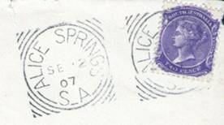
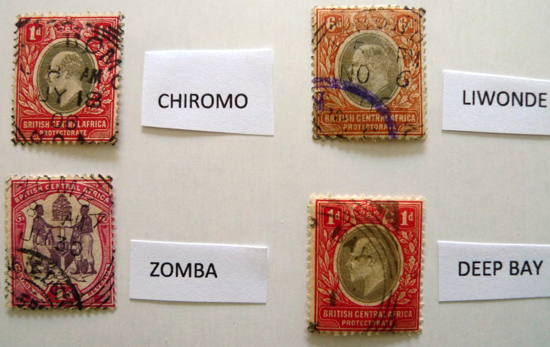
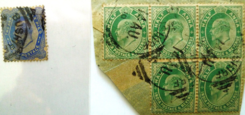
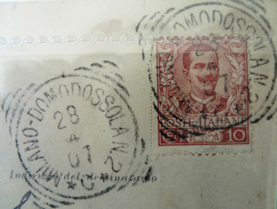
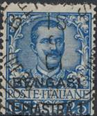
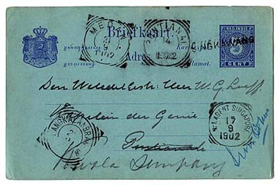
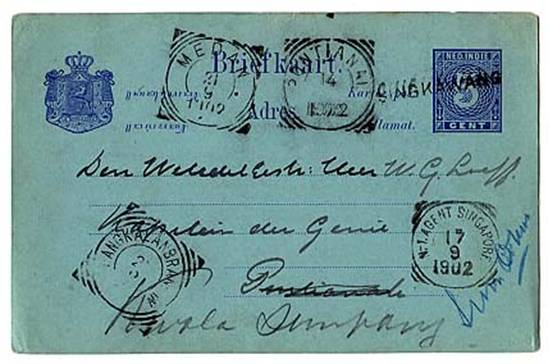
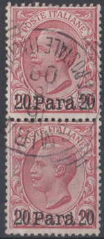

Introduction
When I started getting interested in the Squared Circle Postmarks I went looking for books or publications that would give overall information for all the countries of the world that had been using this type of postmark. I found out that while the information is quite abundant for some countries like the United Kingdom, Canada, Jamaica or Italy, for others the information was scarce or nonexistent
The only world- wide publication I am aware of is the booklet “Squared Circle Postmarks Used Outside Great Britain” published by the Great Britain & Commonwealth Philatelic Society (Switzerland) but, while this is the most valuable publication existing on this subject, with a lot of extremely useful information, also this one is not complete and does not include many countries, particularly those outside the Commonwealth.
As most publications are available only in English I noticed that my fellow Italian collectors had even greater difficulties at collecting information on the Squared Circle Postmarks. I initially decided to start preparing a world-wide summary for my own personal use, but I soon realized that my list is expanding every day with new findings and new information provided by other collectors and I need to share it with all those with the same passion to make it better and also to make it available to those who are supplying me new information. So I finally decided to open a website on this subject which would summarize all the information collected until now on the Squared Circle Postmarks and would be continuously updated with new findings.
Of course I also decided to publish it both in English and Italian to offer some support to my Italian fellow collectors, who don’t speak English. I will be grateful to anybody who can make additional contributions with information on additional countries or postmarks, to make this list even more updated and complete.
General Information
The Squared Circle Postmark is basically formed by combining two pieces of a cancel. It is a circular cancel with a city or country name and possibly also date information completed with a series of external bars on the four corners to form an external square frame.
As anything else connected to Postal services, the first postmarks of this type were introduced in Great Britain at the end of 1879 as an alternative to the duplex cancels which were quite bigger and apparently more difficult to use. Furthermore the idea behind this new postmark was that the combination of a circular postmark with the corner bars would allow to better cancel all stamps affixed on the letter. The Circle Squared Postmarks were very popular until 1910 but then their usage started to decline as new simpler cancels became available. In general they started to disappear around 1930 (with some exception that I will mention later on)
This postmark was mostly used in Great Britain and in the Commonwealth Countries but was later introduced also in other countries like the Dutch Colonies, Italy (probably the highest number of different postmarks per country), Spain, China, Brasil,Hawaii etc.
During their existence they were modified many times so it is possible to find up to 10 different postmarks for the same post office. In particular those of small towns and remote post offices can be quite rare.
The Countries From A to Z
Aden
The Squared Circle Postmarks are very similar to the Indian ones. This is due to the very close connection between the Aden Postal Authority and the Indian one.
There are 4 different types of postmarks used in 3 different locations. ,i.e. Aden, Aden Cantonment and Aden Camp. These postmarks can be found both on stamps of British East Africa and of India


British Central Africa
(see also Nyasaland). The only postmarks known for this territory are those of Blantyre, Chiromo, Chintnche, Deep Bay, Karonga and Liwonde, always with the B.C.A. inscription at the bottom of the postmark.

British East Africa
The territory is identified at the bottom of the postmark as BEA or EAP.It includes the 3 colonies of Kenya, Uganda and Tanganika.
At the moment only 15 locations have been identified,such as Mombasa and Malindi,but there surely are some other ones, in particular smaller post offices.

Mombasa
Albania (Italian Offices: Valona, Scutari and Durazzo )
These postmarks have been used in the above 3 locations in the early 1900’s.In Durazzo they have been used between 1904 and 1914,in Scutari have been used between 1903 and 1913 .

Scutari
Dutch Antilles/ Curacao
The Squared Circle Postmarks were used in these islands since 1891.Only the name of the island was shown in the postmark, with no indication of the specific post office. They have been used in Curacao (different types exist), Bonaire, St. Martin, Saba and St. Eustatius.
|
Curacao |
Saint Martin |


Australia (South Australia)
They have been used in about 600 different Postal Offices in South Australia. This includes the Post Offices of the Northern Territories, which at the time were administered by South Australia (a list of Northern Territories offices I shown separately) .Similar postmark have been used in Queensland, in Brisbane (see a separate section on this). I have been also told that they have been used in Melbourne, Victoria but I could not find any proof of this.
These postmarks have been produced with many different variations, so it is possible to find postmarks which are different for the characteristic of the corners, for the dimension of the letters, the spelling of the abbreviation of South Australia etc.

Australia (Northern Territories)
Over 20 different postmarks have been identified in the book of _______ however there are probably more. In general they are all quite scarce except the Port Darwin and Alice Springs ones
Here is a list of known Post Offices in the Northern Territories:
Adelaide River, Alice Springs, Anthony’s Lagoon, Arltunga, Barrow Creek, Borroloola, Brock’s Creek, Daley Waters, Everleen, Howley Creek, Durrundie, Katherine, Port Darwin, Powell Creek, Roper River, Top Camp (Alexandria), Union Town, Victoria River (Timber creek), Wandi, Winnecke (Gold Fields), Hermansbury (Mission station), Fountain Head railway station (on Pine Creek Railway)

Alice Springs
Australia (Queensland)
The squared circle postmark in Queensland was only used in Brisbane, where it was introduced in 1883 and continued until 1892 or later.
It was used for both departures and arrivals and the codes were always letters. Letters recorded so far (as per Campbell, Queensland Postal History 1990) are A, C, D, F, H (wide and narrow), K, L, P, T and U.
The postmark has a code letter, two lines for the date, "Brisbane" at the top and "QL" at the base. Some of the codes are more rare than others, and none appear to be particularly common.


Brisbane code F Brisbane code L

Brisbane code B Brisbane code A


Brisbane code D Brisbane code E


Brisbane code H Brisbane code K
Bahrain
These postmarks were used in Bahrain between 1885 and 1900, on stamps of British India.

A picture of various Squared Circle Postmarks from Bahrain
Bangladesh
These postmarks were widely used in British India including some towns which are now part of Bangladesh, such as the attached postmark of Sirajganj Bazar. It is my intention to identify all these postmarks separately. For the time being they are listed under India

Sirajganj Bazar
Barbados
They have been used in 11 Post Offices, with a progressive numbering from 1 to 11, under the Barbados inscription. But there are also some which have no numbering. Later on also the postmarks with the letters A,B or C, were introduced.

Barbados A
Borneo (North)
I have not found any mention of these postmarks in any catalogue I have consulted. However two types are known to exist, from Sandakan and Tenom
Sandakan postmark
British Bechuanaland (now Botswana)
The Post Offices of Mafeking and Vryburg were located in this territory. In 1895 the territory was incorporated in the Cape of Good Hope Province and the Mafeking postmark was modified with the CGH inscription. The Postmarks of these two locations are quite rare.

Mafeking
Burma (now Myanmar)
The stamps of British India were used in Burma with 3 different types of postmarks, which always bear the Burma name.
There are also some Military Post postmarks like Burmese Field Sub P.O. and Upper Burma / Field P.O.

Brasil (Belem and Bagé)
There isn’t too much information about these postmarks and they are not mentioned in any catalogue. In any case they were introduced in Belem, in Para’, in the North of the country, around 1930 and were used for approximately 10 years, only for the airmail correspondence and as an alternative to a more common circular postmark. I have acquired postmarks dated from 1937 to 1947. They appear to be more common in 1941. It is possible that this postmark has been copied (in a larger size) from the neighbouring Suriname and British Guyana postmarks.
The second postmark is a new find and it has been used in Bagé, Rio Grande do Sul, which is very far from Belem. All copies I have been able to see are dated 1942, at the time of the local fair. It appears that this postmark was probably produced only for philatelic purposes.

Belem

Bagé R.G. do Sul
Canada
There are two types, with thinner and ticker bars. They were introduced in 1890. But a precursor postmark has been used much earlier in Ottawa, between 1880 and 1881. These postmarks have been introduced in all Canadian Provinces so there are hundreds of different types. Three T.P.O.’s also exist.
They continued to be used until 1940 (in London, Ontario) and occasionally also after this date in Prince Albert, Saskatchewan, Christmas 1950.
A very detailed list of all Canadian postmarks can be found in the books published by BNAPS (written by Glenn Hansen and W.G. Moffat) “The Squared Circle Postmarks of Canada”. These postmarks are also catalogued at the back of the Unitrade Stamp Catalogue.


Cape of Good Hope
There are over 50 different postmarks for this British Colony. They have also been frequently used as arrival postmarks.

Port Elizabeth
|
Silver River |
Kloof Station |


A particular type of octagonal postmark was used in Capetown but this experiment was not very successful.

Here is a list of known postmarks in the Cape of Good Hope Province
|
43 The Strand |
Aliwal North |
|
Beaconsfield |
Beaufort West |
|
Burghesdorp |
GPO Cape Town |
|
Capetown NPB |
Clanwilliam |
|
Claremont |
Colesberg |
|
Craddock |
Dordrecht |
|
East London |
Graaf Reinet |
|
Grahamstown |
Kimberley |
|
King Williams Town |
Kloof St Gardens |
|
Knysna |
Kuruman |
|
Mafeking |
Malmesbury |
|
Middelburg |
Molteno |
|
Montagu |
Mossel Bay |
|
Mowbray |
Newlands |
|
Observatory Road |
Paarl |
|
Port Elizabeth |
Prieska |
|
Queenstown |
Rondesbosch |
|
St Georges St, Cape Town |
Salt River |
|
Somerset East |
Somerset West |
|
Stellenbosch |
Swellendam |
|
Uitenhage |
Victoria west |
|
Vryburg (Bechuanaland) |
Willington |
|
Woodstock Station |
Worcester |
|
Wynberg |
|
Cyprus
The British Postal Offices started to operate in 1878 and from 1882 started to use the squared circle postmarks. They were used in 13 different locations. Some postmarks like Larnaca, Limassol and Nicosia are very common.

Cyprus Town Cancels
Eritrea (Massaua, Italian office)
The squared circle postmarks were only used in Massaua.5 different types have been identified and they were used between 1892 and 1905.

Massaua
Great Britain
The squared circle postmarks have been introduced in Great Britain at the end of 1879 as an alternative to the duplex, which presented quite a few problems, were bigger and more difficult to use. They have been introduced in England and in Wales, but not in Scotland and Ireland. Notwithstanding that over 4000 different types are known to exist. They were widely used until 1910, then they started to be replaced by new types of cancels and ended up disappearing completely around 1930.

London Devonport
Greece (Salonicco, Jannina and La Canea, Italian offices)
They have been used in Greece only in these 3 locations in Italian postal Offices. They were used in La Canea (Island of Crete) from 1900 to 1910,in Salonicco from 1908 to 1914 and in Jannina (Epyrus). They are all quite rare, particularly on covers.


Cancels of Salonicco and La Canea (2)
British Guyana
Eleven offices have surely used these cancels from early ‘80s in 3 different types, with 1 or 2 internal rings and 2 or 3 external arcs . The locations where these cancels were surely used are Brahn, Cabacaburi, Carmichael, Cotton Tree, Dunoon, Georgetown, Hackney, Mallali, New Amsterdam, Puruni and Skeldon, but only Hackney is known to have used the cancel with two internal rings.

Georgetown
Hawaii
The history of the Honolulu Squared Circle Postmark is very interesting. This postmark was originally produced in Canada and probably sent to Honolulu as a sample or as a gift from the Canadian Postal Authorities. The specimen of the Honolulu Postmark was produced in 1894 but it appears that the usage of this postmark only started around January 1897, as the postmarks from this period are very clear .It is known to have been used as a second class cancel (no date) between April 1897 and April 1900, only in Honolulu. The Honolulu postmark is rare and if other postmarks exist for other post offices, they would be very rare.

Honolulu
British India
They were introduced around 1880, with bars (and not arcs) in the 4 corners. At least 4 different types were used in over 200 Post Offices. They have also been used for Military Post (also in North Burma) and on board of boats, for example the Post Office of the Bombay – Karachi Line and on the steam boat Ghat Dibrugarh. They have been used also in some Feudatory and Convention States, and ,as explained in another section, also in Middle East locations outside the Indian territory (like Basra, Mahommera, Baghdad etc.) and also in Africa. In most cases they are applied on Indian stamps.

Grant Road railway, Bombay
A list is attached of all known India Squared Circle Postmarks. This list is still under revision.
|
Agra |
Ahmedabad |
Ahmednagar |
Ajmere |
|
Alighar City |
Alipur |
Allahabad City |
Amirabad Lucknow |
|
Ammapet |
Apollo Bandar Bombay |
Aurangabad |
Baipara Darang |
|
Bangalore |
Bangalore Bazar |
Bangalore Fort |
Bangalore Ry Stn |
|
Bara-Bazar |
Bareilly |
Baroda |
Baroda City |
|
Barthana |
Bassein |
Bassmin Thana |
Ballary |
|
Bhiwani |
Bhowanipore Calcutta |
Bindk |
Bokakhat |
|
Bombay |
Bombay GPO |
Bombay Market |
Bombay S |
|
Bombay Umarkhadi |
Bori Bandar Ma |
Bori Bunder |
Brindabin Muttra |
|
Bulandshahar |
Byculla Bombay |
Calcutta |
Calcutta ins |
|
Calcutta reg |
Calicut |
Chandausi |
Chandor Bazar |
|
Chauk Carnpor |
Chauk Luknow |
Chikhlu Surat |
Chopda |
|
Coconada |
Cochin |
Coimbatore |
Colaba Bombay |
|
Collector Ganj Cawnpore |
Cuttak |
Delhi Gate Ahmedabad |
Dehra-don |
|
Dera IsmailKhan |
Dharmsala |
Dhulia |
Diamond Harbour |
|
Dibrugarh / Durbhunga |
Ellichpur |
Englishman Press |
Esplanade Bombay |
|
Etawau |
Fategarh |
Fatehpur |
Ferozepur |
|
Fyzabad City |
Ghum |
Girgaon Bombay |
Goalpara |
|
Golden Tlmpll |
Hajelpore |
Hissar |
Hubli |
|
Hyderabad Decuan |
In Set no. B |
Jalgaon |
Jamad Kashmir |
|
Japur Ratnagira |
Jhansi |
Jhunjhnu |
Kalok N Gujerat |
|
Kamptee |
Karachi |
Katgodown |
Kayalpatnam |
|
Khada Bazar Belgaum |
Kohat |
Koilpati |
Kosi |
|
Kottayam |
Kumbhir Cachar |
Lahore |
Linga |
|
Lingsugur |
Lonavla |
Lucknow |
Macercoil |
|
Madras |
Mahabaleshwar |
Mahiganj |
Malabar Hill Bombay |
|
Mandvi Bombay |
Mangalore |
Manova Kathiavar |
Mansurnagar lucknow |
|
Market Bombay |
Marwar Junction |
Matigiri |
Mayanaguri |
|
Mazgaon Bombay |
Medha Satara |
Meerut Kutchery |
Mirzapur City |
|
Moolky |
Moradabad |
Moriani |
Mount Road |
|
Mumbadevi Bombay |
Murree |
Muzafarnagar |
Nainital |
|
Nakachari |
Nokachari |
Nutongang Burdwin |
Ootacamund (in Tamil Nadu) |
|
Palampur |
Parel Park St Calcutta |
Paud |
Poona (M.A. Poona) |
|
Princes Dock Bombay |
Puttur South Canara |
Quettya |
Rajkot |
|
Rajapur Banda |
Ramgarh |
Ranchi |
Rangoon |
|
Ranigaj |
Ranigaj Burdwin |
Ratangarh |
Rawalpindi |
|
Rawalpindi Katchery |
Rosa |
Royal exchange Calcutta |
Salaya |
|
Salem |
Samalkot |
Sambhar |
Sardaghat Chittagong |
|
Sealdah Calcutta |
Secretariat Buildings (location unknown) |
Secunderabad Deccan |
Shamatganj Bareill |
|
Shaganj |
Shekhbudin (Pakistan) |
Sheogarh |
Shikapur Sind |
|
Shillong |
Sholapur |
Shukraua Peth Poona |
Simla |
|
Sirajganj Bazar (Bangladesh) |
Sirsa Katra |
Subathu |
Tigyaing |
|
Tikam Garh |
Tinsuria |
Tardeo Bombay |
Tanjore |
|
Tellicherry |
Titagarh |
Tranquebar |
Umballa |
|
Vaduj |
Vankaner |
Veraval |
Victoria Terminus Bombay |
|
Visnagar |
Wellesley St Calcutta |
|
|
I have also an unclassified one: Thaye. Also Guadur (Pakistan) should go in this list.
Railway
|
Akola Ry Stn |
Baltair Stn |
Bangalore Ry Stn |
Bori Bandar Ma |
|
Bhusaval Ma |
Calcutta Par |
Cawnpore Ry Stn N. 1 |
Cawnpore Ry Stn N. 2 |
|
Coimbatore Ry Stn |
Dhamangaon Ry |
Mail Guard Dibrugarh |
Ma Englishman Press |
|
Gadag Ry Stn |
Grant road Ry Stn |
Howrah RSO or RMS Howrah/RSO |
Howrah Ry Stn Late Fee Paid |
|
Hubly Ry Stn |
Hyderabad Ry Stn |
Mail Agent Kulna |
Medha Satara |
|
Meerut City Ry Stn |
Meerut Ry Stn |
New Bazar poona |
MA Poona |
|
Press Sorter RMS |
Rawalpindi RRO |
Surat MA |
Tpo Grant Road Ry Stn Bombay |
|
B78 |
C54 Howrah Ry Stn Late Fee Paid |
L 50 |
|
Field Post Offices
|
AGG's Camp Pajputana |
Burmese Field Sub PO |
Bellary Cantonment |
|
Berilly Artillery Bazar |
FPO N 2,3,5,7,9,10,11,12,14 |
NWP GOVT Camp PO |
|
Trichur Cannt |
Upper Burma Field PO |
|
Ships
|
Bombay Karachi Sea Post Office |
Steamer Ghat Dibrugarh |
Indian States
|
Gwalior |
Jammu Kashmir |
Simoor |
|
Laskhar |
Srinagar |
Simoor State Nahan |
|
Mora |
Jammu |
Simoor State Paonta |
|
|
Tavi Jammu MA |
Simoor State Rainka |
|
Jheend |
|
Dhar |
|
Sangrur |
Charkari State |
|
|
Pattiala |
|
Radhanpur |
|
|
Orcha |
|
|
Nabha |
Tikamgarh |
Patiala |
|
Nabha (3 types) |
|
Patiala |
|
|
Charkari State |
Pattiala |
|
Jhairapatan |
|
|
Used Abroad
|
Aden |
French India |
Irak |
|
Aden Camp |
Chandanagore |
Baghdad |
|
Aden Cantonment |
Karikal |
Basra or Busrah |
|
|
Pondicherry |
|
|
Bahrain |
Yanam |
Muscat |
|
|
|
|
|
Burma |
Iran |
Nepal |
|
Rangoon |
|
|
|
Kyaukpyu St |
Bandar-Abas |
Portuguese India |
|
Sanoway |
Bushire |
Chandor Bazar (?) |
|
|
Jask |
|
|
|
Linga |
|
|
|
Mahommera |
|
French India
These postmarks were used in some towns of French India,such as Chandernagore, Karikal, Pondicherry and Yanam, in postal offices run by the British Authorities and therefore stamped on stamps of British India. The type of postmark was identical to the one used in India. They are very rare and I only have one picture of Chandernagore in my library.

Portuguese India
The British Post was also active in Portuguese India and had some Post offices there. Even if the catalogues do not make any reference to postmarks for the enclaves of Goa, Damao or Diu, it is possible that the squared circle postmarks have been used in these territories. I have been shown a postmark of Chandor Bazar which could be from Portuguese India (but a location with the same name exists also in Central India). This subject is still under investigation

Dutch Indies (now Indonesia)
Introduced around 1900 in the Dutch Colonies in the Indonesian Islands, were used in over 100 locations including the village of Merauke in New Guinea. There is a good variety of types and designs. They have also been used by the Dutch Postal Agents of Singapore and Penang.
Iran
Used on Indian stamps in the post offices of Bandar-Abbas, Bushire, Jask, Linga and Mahommera. Quite rare ,particularly on cover..

Mahommera

Bushire (6)
Iraq
Used on Indian stamps in the Post offices of Bagdad and Basra (or Busrah, in the picture).

Italy
In this country there has been the widest usage of squared circle postmarks with over 10,000 different variants if we take into account all locations and the different types of postmarks existing in that location. There is an excellent catalogue in Italian, Il Nuovo Gaggero - Catalogo dei bolli tondo - riquadrati del Regno d'Italia – published in 2002 by Vaccari. Notwithstanding that, new postmarks are discovered on a regular basis and a new catalogue is under preparation. They have also been used as arrival postmarks on correspondence arriving from other countries.
They have been used in most Italian Post offices between the end of the ‘800 and the beginning of the ‘900 and started to be replaced by other types of postmarks around 1910.They were still relatively common in the ‘20s. The last known usage is in Canelli (Cuneo) April 11, 1933 and in Buvongi (Reggio Calabria), December 30, 1950.
These postmarks have been also imitated to produce some colourful private postmarks for some major hotels and some exhibitions. These “postmarks” have not been postally used and therefore do not appear in any catalogue
They were also issued for the Milan Exhibition and as TPO’s on trains and on boats. Some of these postmarks are quite rare. They were also used on the ships Portoferraio, Roma and Regina Elena and on some torpedo boats during the first world war, all very rare. They have been also used in some offices abroad, but these have been identified separately, and classified under the countries where they have been used, all very rare, particularly on cover. I am showing here same examples of postmarks not appearing in the 2002 edition of the catalogue (they will be included in the new edition),
|
Casale di Posillipo |
Caraffa del Bianco and Ragalasi |


Cosenza distribuzione ,with internal ring
Here are some examples of TPO’s, ships post offices and postal offices at National Exhibitions, all shown in the Gaggero catalogue, and some examples of private postmarks (not in catalogue)
|
Ambulante Milano Domodossola |
Natante Colico-Como |
|
Esposizione Milano (1) with a purple private postmark |
 Private stamp of Grand Hotel de la Ville - Firenze |


Italy – Campione d'Italia
Used in Campione d'Italia between 1895 and 1911. It has an evaluation of 5 points in the catalogue "Il Nuovo Gaggero", (on a scale from 1 to 10) .but it appears to be rarer than that, considering I have not been able yet to obtain a sample. Campione is an enclave in the Swiss territory, which has issued its own stamps during World War 2.
Jamaica
Introduced in 1882, four different types are known and have been used in about 40 different postal offices. Some of these postmarks have been used for a very long time and can be seen even on George V stamps. Rarity varies from very common to quite rare.
Spanish Town (large type)- Kingston - Black River - Falmouth
Kenya
Used in 12 different postal offices, with different types. Known postmarks are from Escarpment, Kikurgu/Kikuyu, Kilindini, Kismayu, Kiu, Machakos, Melindi, Mombasa, Ndi, Railhead/Mombasa, Takaungu and Wasin .

Libya (Tripoli and Bengasi, Italian Offices)
Used in Tripoli for about 15 years between 1897 and 1912,six different types, all with a value of 7 points in the Gaggero catalogue. Used in Bengasi only from 1901 to 1907, two different types, both quoted 9 points in the Gaggero catalogue.


Tripoli di Barberia Bengasi
Malaya
Over 40 different post offices are known, with many different types. The design of the postmarks has been changed quite a few times, in an attempt to produce longer lasting postmarks. This increases the possibility of finding rarer variants of a specific postmark. As mentioned before, also a Dutch Indies postmark was used in Penang.
Taiping (Perak) Teluk Anson (Perak) Batu Gaya
Muscat
Squared circle postmarks have been used on Indian stamps used in Muscat. This postmarks lasted a fairly long time, from 1885 to the end of the century

Nepal
Used only in the capital. Katmandu, its length of usage is unknown. It is rare

Nigeria
The squared circle postmarks were used only in 7 offices in Benin, Bonny, Brass, Old Calabar (see picture), Opobo, Sapele, Warri, from mid 1890.

Postmark of Old Calabar
New Zealand
The first squared circle postmarks were introduced in 1882 and progressively more and more post offices were added until 1915.Subsequently they started to be replaced by different types. But in some places they have remained in usage for a long time. The last known usage is in 1958, if we do not take into account the one used in Eureka in 1965, for historical philatelic celebrations and the one used in Whakatane in 1967 for the national stamp exhibition. They have been used in about 150 postal offices, but also in some naval offices (Monowai and Manganui – 2 types) and to celebrate some philatelic expos.(Aukland).There are also about 20 types of square circles with a PAID inscription on them. And about 20 other postmarks exist for some offices that at some time had only telegraph or telephone facilities. Different forgeries have been seen, usually on Stamp Duty issues and the 5 shillings Mt.Cook stamp.

Timaru Invercargill Wellington Christchurch Dunedin (2) Eureka
Nyasaland
Over 30 offices have used the squared circle postmarks with the description of the country given as Nyasaland, BCA or both. There is also a TPO dated 1924 and a postmark marked “paid” and used for official and government mail

Palestine (Gerusalemme, Italian Post)
The Jerusalem (Gerusalemme in Italian) Italian Post Office has used a squared circle postmark in 1914, just before the start of WW1.It is a quite rare postmark quoted the maximum of 10 points in the Gaggero catalogue

Gerusalemme
Northern Rhodesia
Introduced in the early 1900’s and used in 13 postal offices, with many different types. The towns where they have been used are: Feira, Kampanda, Kapopo, Kasama, Lundazi, Mpiga or Mpika, Mwomboshi, Ndola, Nawalia, Petauke, Sakontwi, Serenje, Sitanda, Mwomboshi

 San
Marino
San
Marino
 Not
to confuse with the Italian squared circle postmark of the town of San Marino,
in the Vicenza province. San Marino has not introduced the squared circle
postmarks but there have been cases where the correspondence has been stamped
in transit or for the first time in Italian towns near the border. In the
attached picture the card has been stamped in San Marino on the right with a
normal circular postmark but then has been stamped at arrival in Rimini. The
postmark has been put on top of the Minerva image on the right side. In the
following picture there is a stamp which has not been stamped in San Marino but
only in transit with an Italian squared circle postmark.
Not
to confuse with the Italian squared circle postmark of the town of San Marino,
in the Vicenza province. San Marino has not introduced the squared circle
postmarks but there have been cases where the correspondence has been stamped
in transit or for the first time in Italian towns near the border. In the
attached picture the card has been stamped in San Marino on the right with a
normal circular postmark but then has been stamped at arrival in Rimini. The
postmark has been put on top of the Minerva image on the right side. In the
following picture there is a stamp which has not been stamped in San Marino but
only in transit with an Italian squared circle postmark.
Shangai (China)
Postmark used only in Shangai. Rare. Information on this postmark is quite scarce.
Shangai raccomandate
Singapore
I am not aware of square circle postmarks used in Singapore except those already mentioned in the Dutch Indies section

Somalia- Italian (Brava, Giuba, Merca, Benadir and Mogadiscio)
Used for a short period between 1903 and 1906 in the 5 locations listed above. They are catalogued in the catalogue Gaggero as very rare (on letter) with a maximum point of 10. In addition to that there is another postmark titled “ Direttore dei servizi postali Mogadiscio” in purple, with no date. Rare.
 

Brava Giuba Mogadiscio
Spain(Madrid)
Used only in Madrid around 1900, I am only aware of postmarks used between early 1893 and end 1894.I have also seen a copy of a half postmark (see picture) but until now I have not been able to find out if it is a variant or simply the effect of a malfunction

Madrid cut (Nov. 1893) Madrid whole postmark (Feb. 1893)
South Africa
In Orange Free State some modified squared circle postmarks (octagonal) have been used with the province name shortened as OVS and later as ORC (Orange River Colony). During the Anglo-Boer war some postmarks were used in different locations than what had been originally planned .For the square circle postmarks they have been used in Kuruman abd Rustenburg. They are extremely rare. There are forgeries of this type of postmarks .

Sudan
During the war against the Mahdi forces, the British troops set their camps round Wadi Halfa and the Nile. Of the 3 known Military Post Offices only one (office number 11 - Suakin) used the squared circle postmark on Indian stamps, to stamp the correspondence mailed by British and Indian troops.

Field Post Office n. 11
Suriname

 Also in this other Dutch colony they
introduced the squared circle postmarks, which instead were never introduced in
Holland. They have been used extensively but unfortunately there is no
publication that lists the exact number of locations where these postmarks have
been used. The official information at the moment identifies only the offices
of Paramaribo, Sarama, Nickerie and Beneden Commewijne .There are for sure
other ones which, particularly for the smallest locations, are surely rare
items. I am also adding a picture of a Para postmark apparently used on the
Para river.
Also in this other Dutch colony they
introduced the squared circle postmarks, which instead were never introduced in
Holland. They have been used extensively but unfortunately there is no
publication that lists the exact number of locations where these postmarks have
been used. The official information at the moment identifies only the offices
of Paramaribo, Sarama, Nickerie and Beneden Commewijne .There are for sure
other ones which, particularly for the smallest locations, are surely rare
items. I am also adding a picture of a Para postmark apparently used on the
Para river.
Swaziland
Only 3 offices used these postmarks: Embadaan, Darkton and Bremersdorp (was Manzini) with the identification of the country as Swaziel or Z.A.R.: they exist also in blue.
Bremersdorp
Tunisia (Italian Offices, Tunisi, La Goletta and Susa)
Postmark used in Tunis between 1894 and 1895 Used also in La Goletta in 1893-96 and Susa in 1897. Rare. From 8 points (Tunisi) to 10 points (the other two) on the catalogue "Il Nuovo Gaggero".
Tunisi
Turchia (Smirne,Italian office)
Postmark used only in the Smirne post office in 1908- 1909.

Smirne
 Zanzibar
Zanzibar
 Postmarks
used on Indian stamps (on international correspondence in arrival, forwarded
through Aden) around 1890 and on Zanzibar stamps from 1898 to 1930. There is
a Zanzibar postmark plus four local postmarks of Chwaka, Mkoan, Mkokotoni e
Weti, with the inscriptions of Zanzibar or Pemba at the bottom. The Zanzibar
postmark exists also of the Indian type, the others are of the British type.
Postmarks
used on Indian stamps (on international correspondence in arrival, forwarded
through Aden) around 1890 and on Zanzibar stamps from 1898 to 1930. There is
a Zanzibar postmark plus four local postmarks of Chwaka, Mkoan, Mkokotoni e
Weti, with the inscriptions of Zanzibar or Pemba at the bottom. The Zanzibar
postmark exists also of the Indian type, the others are of the British type.
Final remarks
I have tried to summarize in these notes all the available information on worldwide squared circle postmarks I have been able to collect during the years. It is however a subject on which there is still a lot to discover as confirmed by the recent discoveries I have made of Italian and Brazilian postmarks which do not appear in any catalogue. I am very interested in receiving any type of comment or information which can help me to expand this essay and also to exchange informations with other collectors of this type of postmarks ( write to stampsofitaly@yahoo.ca). Please note that my research has not included the Hoster postmarks, which, even if they are very similar to the squared circle postmarks, are not classified in the same category. I am showing hereunder the picture of a Berlin Hoster postmark, to help understand the differences between the two types of postmarks.

Bibliography:
- Crevato-Selvaggi: Il Nuovo Gaggero - Catalogo dei bolli tondo- riquadrati del Regno d’Italia - con la collaborazione di Daniele Prudenzano - Ed. Vaccari;
- Robson Lowe: The Encyclopedia of British Empire Postage Stamps;
- UniSafe: Catalogue of Canadian Stamps;
- Bill Atmore: Jamaica Squared Circle Postmarks;
- Alfred Whitehead (BNAPS): The Squared Circle Postmarks of Canada;
- Curt Nicolaus Fernau: Squared Circle Postmarks used outside Great Britain;
- http://www.rjbw.net/IndiaUA.html: The Postal History of India, Indian Stamps Used Abroad;
- Rodney Overton: A Catalogue of Squared Circle Postmarks of South Australia.
Patricia E. Capill- New Zealand Squared Circle cancellations.